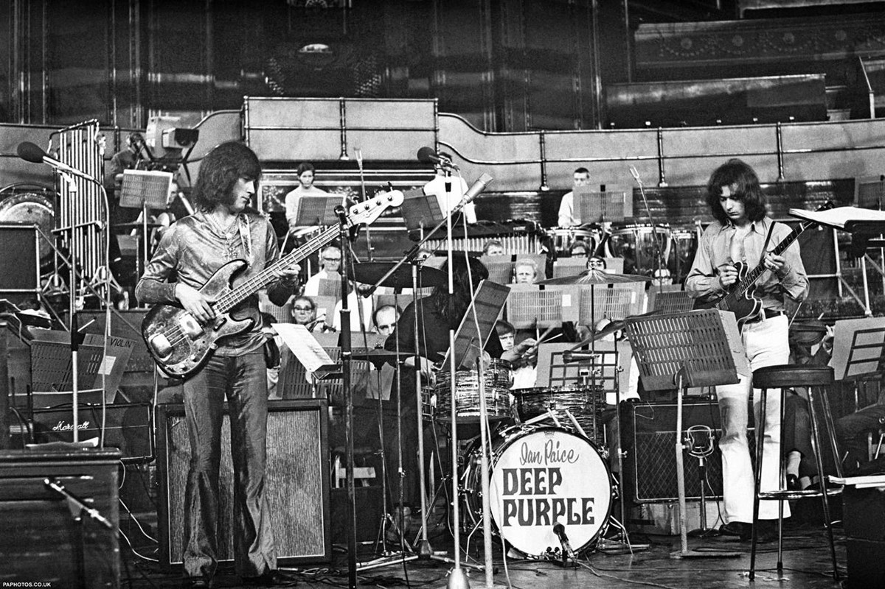

История Deep Purple
Путь легендарной рок-группы, оставившей неизгладимый след в истории музыки.

Хронология и важные события
1968–1970: Рождение легенды
Deep Purple образовалась в 1968 году в Великобритании. Их ранние записи сочетали
элементы психоделического рока и прогрессивного звучания. Уже с первых альбомов
группа начала завоёвывать внимание публики благодаря ярким живым выступлениям
и нетипичному саунду.
1970–1973: Расцвет хард-рока
Начало 70-х стало «золотым веком» для Deep Purple. Альбом "In Rock" (1970)
заложил фундамент для будущих хард-рок-композиций группы. "Machine Head" (1972)
и живой альбом "Made in Japan" (1972) закрепили их статус одних из важнейших
фигур в мире тяжёлой музыки.
1974–1976: Перемены и эксперименты
В середине 70-х в составе Deep Purple произошли изменения: приход новых музыкантов
добавил свежие краски в звучание. Альбомы этого периода сочетали элементы
фанк-рока, соула и прогрессивных экспериментов, расширяя границы жанра.
1984–1990-е: Возвращение классического состава
После временного распада и сольных проектов участников в 1984 году состоялось
воссоединение классического состава. Альбом "Perfect Strangers" (1984)
успешно сочетал традиционный хард-рок с более современным звучанием,
а последующие работы укрепили их популярность по всему миру.
1990-е – Наши дни: Неизменная энергия
С течением времени Deep Purple продолжали записывать альбомы и выступать
на сценах всего мира. Несмотря на изменения в составе и музыкальные тенденции,
главный дух группы, основанный на виртуозности, эксперименте и живой энергетике,
остаётся неизменным. Новые релизы и туры доказывают, что музыка Deep Purple
по-прежнему актуальна и вдохновляет новое поколение поклонников.